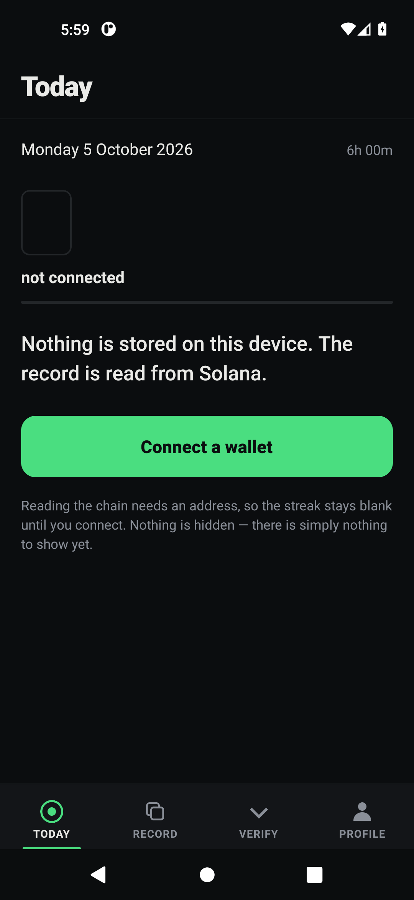
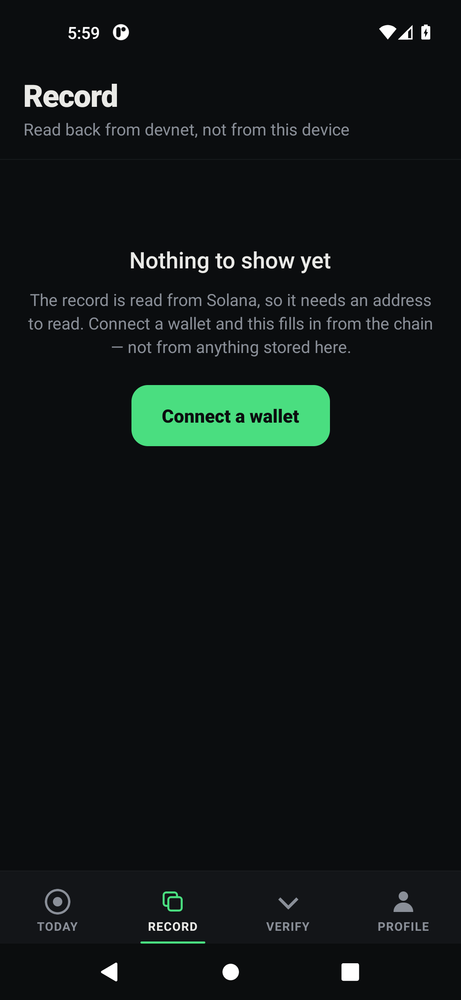
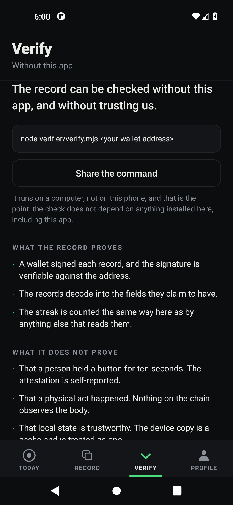
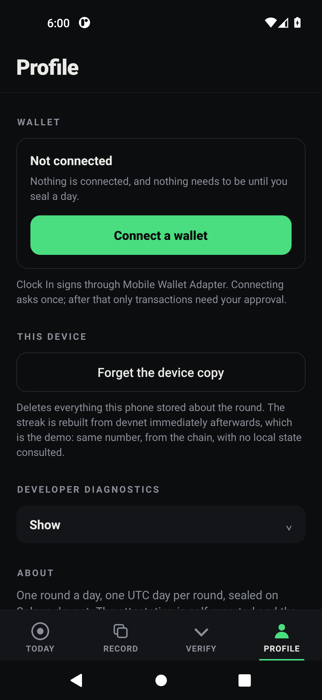

A daily record you can check, not one you have to trust.
A Solana Mobile app that turns a daily act into an on-chain record — and ships a
second tool that reads that record without trusting the first.
github.com/Zaygal/solana-mobile-scaffold
The problem
Every habit app tells you your own streak. That is the app's
word, and the app is the only witness.
A record whose only custodian is the thing being recorded is a claim, not
evidence. Delete the app and the streak is gone — which tells you where it lived.

Stickiness here is a hypothesis, not a result: a record you cannot inflate is worth more than one you can.
The act

One round a day. Held for ten seconds. Released.
There is no camera, no sensor and no witness.
The app will tell you that itself.
Record tab, real capture. Each row is one sealed day.
transactions 4 scanned
valid seals 1
sealed days 1
current streak 1 day
most recent 2026-10-05
day sequence 2026-10-05 source=manual
continuous yes, no gaps
earliest 2026-10-05 06:05:59 UTC
Delete the app's storage and the record survives, because the record was never in the app.
Real output, unedited. The number moves daily by design — this is what it returned on 2026-10-06.
Limits
What it does not prove
Taken from the app's own limits screen, not written for this deck.
01 That a physical act happened. The attestation is self-reported.
02source records which mechanism produced the observation, not the truth of it.
03 That the RPC answered honestly. Point it at another node and compare.
A record that overstates itself is worth less than one that does not. This is the slide that makes the other nine believable.
User experience
An app, not a website in a shell
Four destinations — Today, Record, Verify, Profile — with the wallet as an
action rather than a gate. Onboarding that does not block.
The hardware back key unwinds to Today instead of closing the application.
TODAYRECORD

VERIFY

PROFILE
A mobile app built with web technology. Not: a website made responsive. Screens captured from the APK on an emulator.
Craft
What we refused to build
The craft is in what was refused.
01Streak recovery. Built to the point of the schema, then dropped:
restoring a broken streak needed source='recovery' on chain, which would have
put a fabricated day into a record whose only value is that its days are real.
The feature lost to the product's own thesis.
02A fake wallet picker. Refused outright — no invented wallet
discovery, no hard-coded list, no fabricated error dressed as the primary experience.
The protocol disappears into the experience instead of being mimed by it.
03More code. Five candidate concepts were scored and killed
before anything was built, between 0.80 and 0.90, on the rule that a better submission
is not a larger one.
Evidence
Engineering, as evidence rather than assertion
CI-gated: an APK build, an ABI guard across 7 libraries, a verifier self-test of
23 cases, and an emulator round-trip that prints
seal-roundtrip OK clock1|2026-01-01|motion|10000|1000|manual|1
A screen-capture harness that drives the real APK on an emulator and asserts the
process survived every tap — including the hardware back key
Defects that harness found and fixed, named: a fatal VIBRATE crash on every
tab tap, a status bar printing over every title, and an app that called itself
MWA Scaffold on the device
Every one of those was found by looking, not by reading. Two were invisible in the source.
Clock In
A daily record you can check. Held for ten seconds, sealed to
Solana, and read back by a tool that does not trust the app that wrote it.
APKRepoVerifier
Next, without a promise the product cannot keep: the same record, with the
attestation made stronger than self-reported.